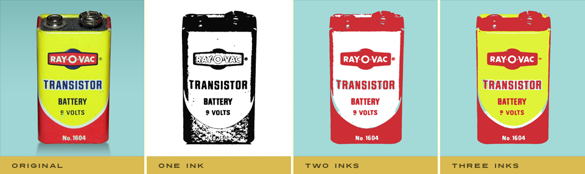
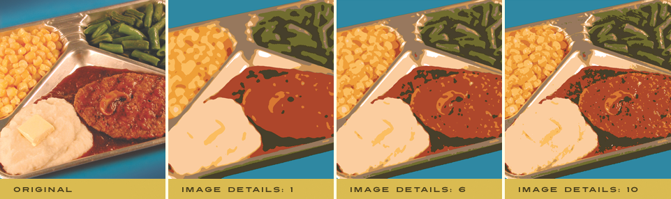
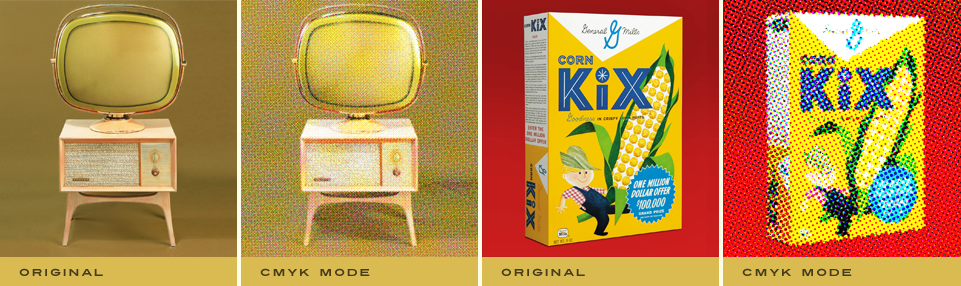

Let's Learn About Permanent Press 2
Prepress Settings
Each time you launch Permanent Press 2, your image is automatically separated into printing press ink plates! Using the Prepress tabbed section, you can select and fine-tune the number of ink colors you want your image to have as well as pick a paper to apply your image to!

|
Creating ink plates
- Color Mode - To begin, you'll first need to determine the appropriate Color Mode you wish to work with. You can select either Spot Color Mode (a custom color palette) or CMYK Color Mode (Cyan, Magenta, Yellow & Black) to create an offset printed effect. A few minutes with each mode will quickly reveal the difference.
- Spot Color Mode - Using the Number of Inks control, you can select up to ten individual ink plates (or spot colors) to render the image with. These spot colors are automatically detected when Permanent Press 2 launches and can be easily fine tuned using the four controls just below the ink plate swatches.
 - CMYK Color Mode - The Number of Inks control becomes disabled in CMYK mode as four is the maximum amount of colors available in this printing process. That said, this mode takes advantage of the four color process printing model which separates any image into Cyan, Magenta, Yellow, and Black. It should be noted even though the number of inks is locked that the CMYK colors can still be individually adjusted.
- Fine Tuning Ink Plate Colors - You can quickly change the ink color you wish to work with by clicking on the ink color swatch below the Number of Inks control. Additionally Mac users can hold the Control key + click or Windows users can right-click on any of the ink color swatches to launch the color picker dialog.
- Ink Color Settings - Click the Picker button on the left to launch the color picker and choose a color you wish to use for a selected ink plate. Click the Dropper button to select a color from anywhere on the desktop you wish to change the ink plate color to.
- Locking/Unlocking Ink Colors - In Spot Color Mode, you can even lock specific colors you wish to keep by clicking the Lock button. Any ink plates that have been locked are identified with a small icon in the lower right hand corner of the swatch. To unlock an ink plate color, simply select the ink plate and click the Unlock button.
When working with the plug-in, you may find that not only do you want to work with a fixed amount of ink colors, but you also want them to be very specific colors - the lock feature makes this easy. - Removing Ink Colors - At any time you wish to remove an ink color, simply select the ink color you wish to remove and click the Remove button or reduce the Number of Inks slider just above. Remember, any Locked ink color will be kept and if you accidentally remove a color you didn't intend to, simply increase the Number of Inks and it'll reappear.
- Image Details - This control allows you to define the level of detail you may wish to preserve for the image you're working with. If you want to reduce or increase the quality and reveal more image details, you can adjust this control accordingly.


Make Your Image Pop With Paper!
- Choose Your Paper - Simply click the Choose button in the Paper dialog to launch the Paper Effect Picker. As you click each paper, your image will update in the preview window in realtime. To see a quick preview of all paper effects, simply click the eyeball icon along the bottom of the picker to toggle this view. Click the arrow icons along the top of the picker to see more options.
Once you've selected the desired paper effect you'd like to use, Click Apply to select and apply the chosen effect or click Cancel to leave the picker dialog.

Fine Tune Your Paper
Once you've selected the desired paper you'd like to use, you can adjust the controls within the Paper dialog box to fine tune the paper. Additionally, you can select a different paper at any time and your current settings will be applied to the new paper. All other paper controls will remain disabled until a paper has been selected.
- Paper Scale - Using the slider control, you may enlarge or reduce the size of the paper or simply enter a number in the text entry field to the right.
- Intensity - Increase or fade the paper visibility by moving the slider control or by simply entering a number in the text entry field to the right.
- Color - Simply click the color swatch icon to the right of the Color slider to launch the color picker to select the color you'd like to apply to the paper. Use the Color slider to desaturate the paper tint to its own color. Check the Colorize checkbox to fully colorize the paper for a brighter, more vibrant paper color.
- Flip Horizontal - Click the checkbox to flip the paper horizontally.
- Flip Vertical - Click the checkbox to flip the paper vertically.
- Invert Paper - Click the Invert checkbox to inverse the paper.
- Rotate - Click either rotate button to rotate the paper in 90 degree increments.
Working with the Preview Window
- Preview Options - Above the preview window at right, you'll notice some viewing options. By default the Composite option is selected to show you what all combined tabbed section effects look like applied to the image. Click the Paper option if you just want to view the paper with settings you selected. At any time you can click the Original option to toggle between the unaffected image and a preview of the filtered image with all effects applied.
- Reset - Reset is located above the preview window on the right. When clicked, it will reset all Prepress effect controls to their default state.
- Magnifying the Preview - Below the preview window, you'll see the magnification controls. By clicking the appropriate icon (- or +), you can decrease or increase the magnification of the preview window. The current level of magnification is shown between the magnification icons. If you prefer keyboard shortcuts, you can simply hold down the Command (Apple) key (or the Ctrl key on Windows) then press the plus sign (+) or the minus sign (-) respectively to zoom in or out of your image.
- Moving the Preview - When you have increased magnification and wish to view the texture effect on the rest of the image not visible in the preview window, simply move your mouse into the preview window and click and drag your image around to reveal the effect on your image.
- Re-positioning ink plates - To modify the position of an ink plate on your image, hold down the Command (Apple) key (or the Ctrl key on Windows) then click and drag within the preview window to reposition the center of the effect. You can change which ink plate you're repositioning via any ink plate selector dialog along the top of the plug-in.
- Generate Paper in New Layer Below* - Simply enable this option if you want the plug-in to create and apply the paper effect on its own layer below leaving the original image intact.
* NOTE - This option is only displayed in Adobe Photoshop and other imaging applications that support layering.
Pro Tip - Adobe Photoshop users may use keyboard shortcuts to instantly change the zoom magnification. To fit the full image within the preview window, simply hold down the Command (Apple) key (or the Ctrl key on Windows) then press the number zero (0) on the keyboard. To view the image at 100% size, hold down the Command (Apple) key (or the Ctrl key on Windows) then press the number one (1) on the keyboard.